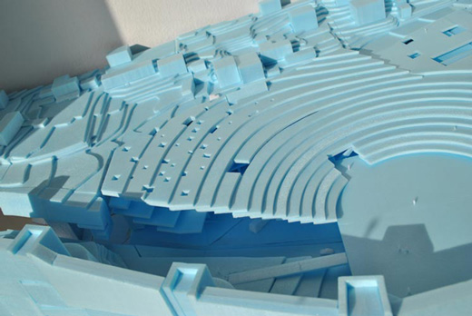
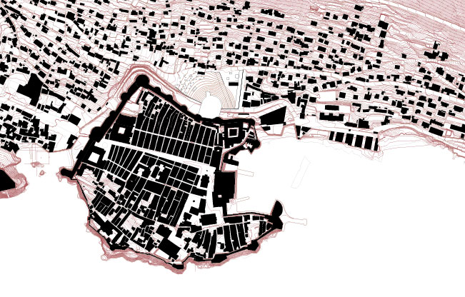
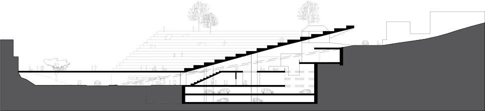
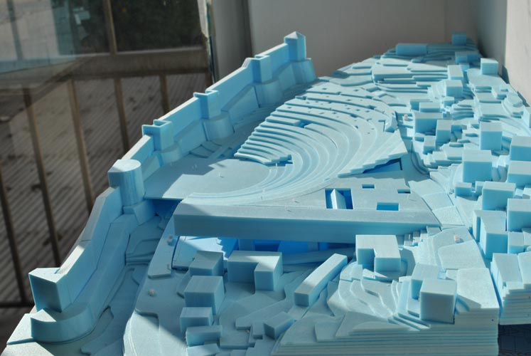
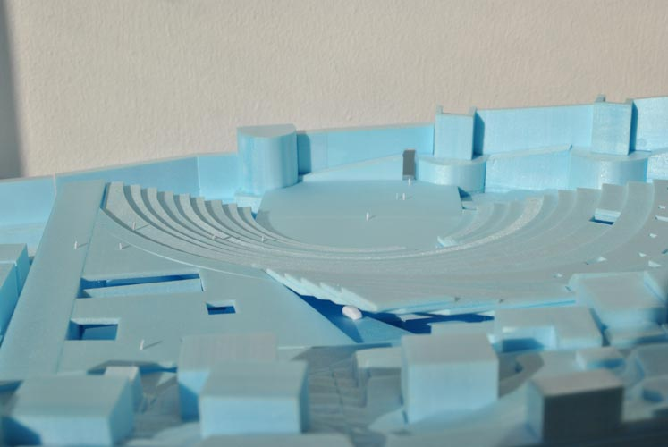

Horizon
FORA + Beth Hughes
Competition - Urban Plan - Dubrovnik - 2011

When Dubrovnik entered the list of World Heritage Sites in 1979, the life of its inhabitants became increasingly more difficult.
Since then, every function that doesn't comply with the preservation rules must be accomodated outside of the wall. The pressure inside the old city has subjugated its surroundings to a subaltern position.
The hierarchy between old and new dictates that new developments "should not compete with the historic town". But does the city actually benefit from this perpetual submission? "Although severely damaged by an earthquake in 1667, Dubrovnik managed to preserve its beautiful Gothic, Renaissance and Baroque churches, monasteries, palaces and fountains."
The condition that generated the city's uniqueness, and that eventually led to its preservation, is now endangered by the fear of the contemporary, which is also meant to be part of its future history.
The site offers the opportunity to mend this contradiction: the success of the new development will enrich the city's cultural heritage, and engrave the mark of our time in its history.




Team: João Moura Fagulha, João Prates Ruivo, Raquel Maria Oliveira, Beth Hughes. Client: Europan Association.